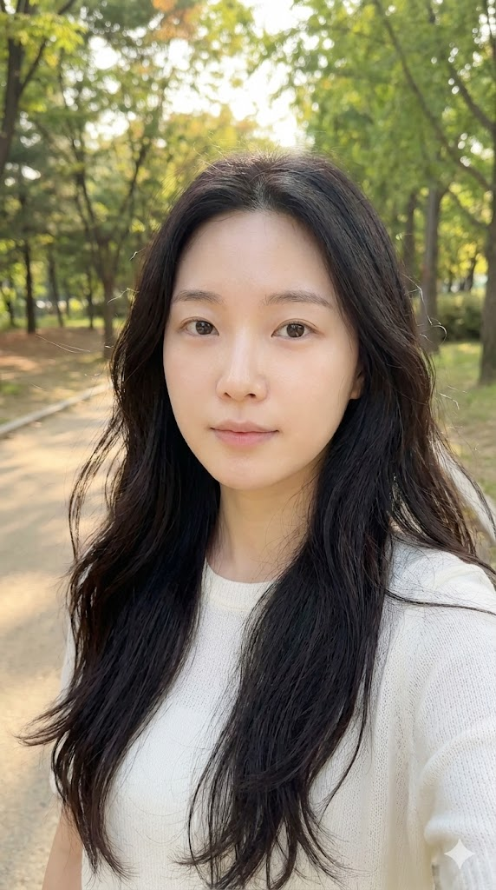
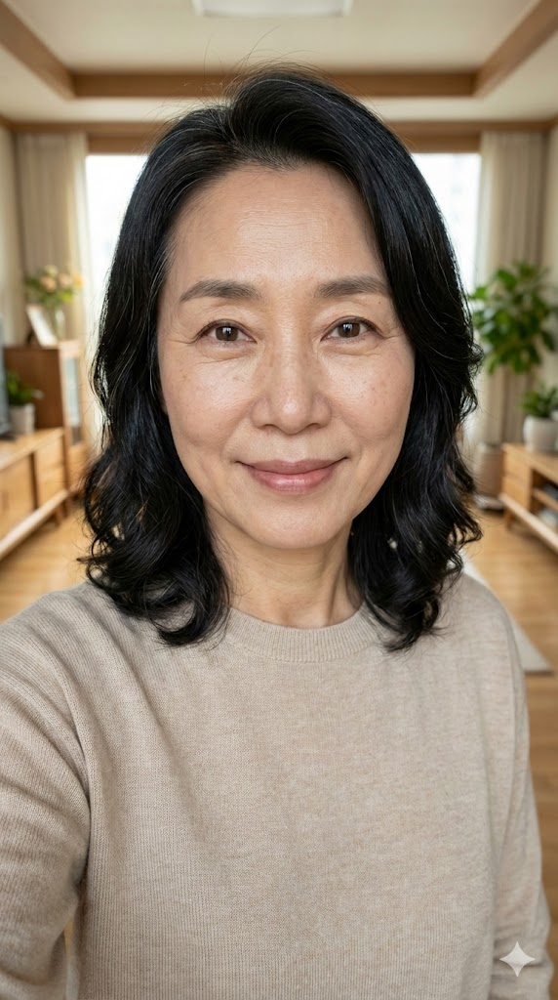

Important
10배 더 빠르게 흡수하는 방법
릴스 영상을 저장 또는 공유하기로 기록 해놓습니다.
DM으로 받은 링크를 카톡으로 옮겨 놓습니다.
PC로 접속해서 AI 즐겨찾기 폴더를 만들어 저장해놓습니다.
바로 사용을 해봅니다. 절대 미루지 마세요. (⭐ 제일 중요)
가장 중요한 활용 방법
-
이런 아바타를 생성할 때는 json프롬프트의 디테일이 가장 중요합니다.
-
제가 드린 프롬프트를 복사해서 gpt에 붙여넣고 원하는 캐릭터의 형태(헤어스타일, 나이, 성별, 장소, 복장 등등)를 수정해달라고 하고 생성해가면서 디테일을 맞춰보시는 것을 추천드립니다.
-
나노바나나2로 이미지 생성을 하셔야 합니다!
첫 번째 프롬프트
{
“prompt_type”: “image_generation”,
“output”: “single_image_only”,
“aspect_ratio”: “9:16”,
“subject”: {
“demographics”: “Korean woman, around 25 years old”,
“hair”: {
“color”: “Natural black”,
“style”: “Long, soft natural waves”,
“texture”: “Smooth, airy, minimal styling”
},
“face”: {
“skin_tone”: “Light Korean skin with a natural dewy glow”,
“eyes”: “Large deep brown eyes, soft idol-like gaze, natural long lashes”,
“eyebrows”: “Natural straight or softly arched Korean brows”,
“lips”: “Soft rose-beige gradient tint, naturally full”,
“makeup”: “Clean and subtle K-idol style with light blush and natural eyeliner”
}
},
“apparel”: {
“top”: {
“item”: “Simple ribbed knit top or cardigan”,
“color”: “White or cream”,
“details”: “Minimal buttons, fitted silhouette, modest scoop or V-neck”
},
“bottom”: {
“item”: “Light-wash denim jeans”,
“color”: “Soft blue”,
“visibility”: “Waistband and upper portion visible”
},
“accessories”: [
“Minimal thin silver necklace”
]
},
“pose_and_framing”: {
“type”: “Selfie”,
“angle”: “Slight high angle, natural selfie perspective”,
“framing”: “Close-up portrait to upper body, vertical 9:16 crop”,
“body_position”: “Head gently tilted, natural posture”,
“gaze”: “Warm, soft direct eye contact with camera”,
“directive”: “Selfie-style image as if taken by the subject, but the phone or hands must not be visible in the frame”
},
“environment”: {
“setting”: “Cozy personal bedroom”,
“flooring”: “Light wood flooring”,
“background_elements”: [
“Soft natural daylight from a window”,
“Neutral white or beige bedding”,
“Small dresser or desk with neatly arranged items”,
“Small plant or light clutter for a daily, natural mood”
]
},
“technical_details”: {
“camera_model”: “Smartphone Camera (e.g., iPhone 13 Pro Front Camera)”,
“lens”: “23mm wide-angle equivalent”,
“aperture”: “f/2.2”,
“shutter_speed”: “1/60s”,
“iso”: “ISO 100”,
“white_balance”: “Auto, warm natural daylight”,
“lighting”: “Soft diffused window light”,
“focus”: “Sharp focus on eyes with soft background blur”,
“resolution”: “High-resolution”,
“generation_directive”: “Single portrait image only; no multi-cut or variations; strictly 9:16 vertical format”
}
}
두 번째 프롬프트

{
“prompt_type”: “image_generation”,
“output”: “single_image_only”,
“aspect_ratio”: “9:16”,
“subject”: {
“demographics”: “Korean woman, around 23–25 years old”,
“hair”: {
“color”: “Natural soft black”,
“style”: “Loose, slightly wavy with natural movement”,
“texture”: “Realistic strands, soft shine, natural volume”
},
“face”: {
“skin_tone”: “Fair Korean skin with natural texture and soft pores visible, photorealistic”,
“eyes”: “Natural brown eyes with realistic light reflections, long lashes”,
“eyebrows”: “Straight Korean-style eyebrows with natural hair texture”,
“lips”: “Soft peach-pink, lightly hydrated, natural gradient”,
“makeup”: “Ultra-natural Korean daily makeup: subtle eyeliner, sheer blush, very light shading”
}
},
“appearance_realism”: {
“style”: “High-detail photorealistic human, natural imperfections allowed”,
“skin_details”: “Natural pores, fine texture, slight highlights, realistic lighting behavior”,
“hair_details”: “Visible individual strands and realistic volume”
},
“apparel”: {
“top”: {
“item”: “Soft knit sweater”,
“color”: “Light beige or muted cream”,
“details”: “Clean neckline, minimal pattern”
},
“bottom”: {
“item”: “Not fully visible”,
“color”: “Neutral tones”
},
“accessories”: [
“Thin silver necklace”,
“Small natural-looking earrings”
]
},
“pose_and_framing”: {
“type”: “Selfie”,
“angle”: “Slightly above eye level, natural smartphone selfie angle”,
“framing”: “Close-up portrait to mid-shoulder in vertical 9:16”,
“body_position”: “Relaxed posture, slight head tilt”,
“gaze”: “Warm, natural direct eye contact with the camera”,
“directive”: “Selfie-style image as if taken by the subject, but the phone or hands must not be visible in the frame”
},
“environment”: {
“setting”: “Modern cafe with bright natural daylight”,
“background_elements”: [
“Large window with soft natural sunlight”,
“Blurred street or greenery outside”,
“Light wooden table and simple interior elements”,
“Soft bokeh for background realism”
],
“mood”: “Daily, warm, calm, realistic lifestyle moment”
},
“technical_details”: {
“camera_model”: “Smartphone selfie camera (iPhone 15 Pro level)”,
“lens”: “22–24mm wide-angle equivalent”,
“aperture”: “f/2.2”,
“shutter_speed”: “1/70s”,
“iso”: “ISO 60–120 (natural daylight)”,
“white_balance”: “Auto, warm daylight tone”,
“lighting”: “Soft, realistic window lighting; subtle highlights on skin”,
“focus”: “Precise focus on eyes, realistic depth-of-field blur”,
“resolution”: “Ultra-high-resolution photorealistic output”,
“generation_directive”: “Single portrait image only; hyper-realistic human; no multi-cut or variations; strictly 9:16 vertical”
}
}
세 번째 프롬프트

{
“prompt_type”: “image_generation”,
“output”: “single_image_only”,
“aspect_ratio”: “9:16”,
“subject”: {
“demographics”: “Korean woman, early 20s”,
“hair”: {
“color”: “Natural black with soft brown undertones”,
“style”: “Long straight hair with slight natural C-curl ends”,
“texture”: “Smooth, glossy, well-maintained”
},
“face”: {
“skin_tone”: “Light fair Korean skin with natural glow”,
“eyes”: “Large almond-shaped brown eyes, defined yet soft, realistic reflection”,
“eyebrows”: “Neat Korean straight brows, naturally full”,
“lips”: “Natural pinkish tone with slight gloss, soft gradient”,
“makeup”: “Clean K-beauty look: natural eyeliner, soft peach blush, subtle glow”
}
},
“appearance_realism”: {
“style”: “Ultra photorealistic with realistic skin texture”,
“skin_details”: “Visible fine texture, natural pores, soft highlights and shadows”,
“hair_details”: “Individual strands visible, natural variation”
},
“apparel”: {
“top”: {
“item”: “Soft fitted knit or long-sleeve top”,
“color”: “Light pastel pink or muted beige”,
“details”: “Clean neckline, minimalistic design”
},
“bottom”: {
“item”: “High-waist jeans”,
“color”: “Medium light blue”,
“visibility”: “Waist and upper portion visible”
},
“accessories”: [
“Small silver hoop earrings”,
“Thin minimalist necklace”
]
},
“pose_and_framing”: {
“type”: “Selfie”,
“angle”: “Eye-level or slightly above, vertical 9:16 portrait”,
“framing”: “Upper body and face in close-up focus”,
“body_position”: “Slight head tilt, relaxed posture”,
“gaze”: “Natural, soft direct gaze into the camera”,
“directive”: “Selfie-style image as if taken by the subject; phone or hands must not appear in frame”
},
“environment”: {
“setting”: “Minimalist modern living room”,
“background_elements”: [
“Large window with bright natural daylight”,
“Light-colored sofa”,
“Neutral-toned decor”,
“Soft shadows for realism”,
“Subtle interior details like plants or books”
],
“mood”: “Bright, clean, warm, photorealistic”
},
“technical_details”: {
“camera_model”: “Smartphone front camera (iPhone 15 Pro level)”,
“lens”: “22–24mm wide-angle equivalent”,
“aperture”: “f/2.2”,
“shutter_speed”: “1/80s”,
“iso”: “ISO 60–100”,
“white_balance”: “Auto, bright daylight”,
“lighting”: “Strong natural light from window, soft diffusion on face”,
“focus”: “Precise focus on the eyes, smooth depth-of-field in background”,
“resolution”: “Ultra-high photorealistic quality”,
“generation_directive”: “Single image only; no multi-cuts; realistic Korean female; strictly vertical 9:16”
}
}
네 번째 프롬프트

{
“prompt_type”: “image_generation”,
“output”: “single_image_only”,
“aspect_ratio”: “9:16”,
“subject”: {
“demographics”: “Korean woman, early to mid 20s”,
“hair”: {
“color”: “Natural dark brown-black”,
“style”: “Long, slightly wavy, soft natural breeze effect”,
“texture”: “Light, airy, natural shine with realistic strands”
},
“face”: {
“skin_tone”: “Light fair Korean skin with natural soft glow”,
“eyes”: “Gentle brown eyes, clear and slightly wide, pure and innocent expression”,
“eyebrows”: “Natural straight Korean brows, slightly soft and youthful”,
“lips”: “Very soft pink, natural gradient, minimal gloss”,
“makeup”: “Ultra-light natural makeup, almost bare face style; subtle lash definition; no harsh contours”
}
},
“appearance_realism”: {
“style”: “Photorealistic, clean, youthful”,
“skin_details”: “Soft real skin texture, natural highlights, slight pores visible”,
“hair_details”: “Realistic movement from gentle outdoor breeze”
},
“apparel”: {
“top”: {
“item”: “Light, soft knit or cotton top”,
“color”: “White, soft ivory, or pastel tone”,
“details”: “Clean neckline, light and airy aesthetic”
},
“bottom”: {
“item”: “Not fully visible or slightly visible skirt/jeans”,
“color”: “Soft neutral tones”
},
“accessories”: [
“Small pearl stud earrings or no accessories”
]
},
“pose_and_framing”: {
“type”: “Selfie”,
“angle”: “Slight high angle, vertical 9:16”,
“framing”: “Close-up portrait in natural outdoor light”,
“body_position”: “Relaxed posture, gentle head tilt”,
“gaze”: “Calm, soft direct gaze into the camera”,
“directive”: “Selfie-style image as if taken by the subject; phone or hands must not appear in frame”
},
“environment”: {
“setting”: “Outdoor park or walking path with soft natural greenery”,
“background_elements”: [
“Sunlit green trees softly blurred”,
“Warm daylight filtering through leaves”,
“Natural outdoor bokeh”,
“Bright, clean, airy outdoor atmosphere”
],
“mood”: “Pure, gentle, fresh, natural”
},
“technical_details”: {
“camera_model”: “Smartphone front camera (iPhone 15 Pro level)”,
“lens”: “22–24mm wide-angle selfie lens”,
“aperture”: “f/2.2”,
“shutter_speed”: “1/100s”,
“iso”: “ISO 60–120 depending on sunlight”,
“white_balance”: “Daylight-balanced”,
“lighting”: “Bright natural sunlight with soft shadows from trees”,
“focus”: “Sharp focus on eyes; natural depth-of-field blur in background”,
“resolution”: “High-resolution, photorealistic”,
“generation_directive”: “Single portrait image only; no variations; vertical 9:16; highly realistic Korean female outdoors”
}
}
다섯 번째 프롬프트

{
“prompt_type”: “image_generation”,
“output”: “single_image_only”,
“aspect_ratio”: “9:16”,
“subject”: {
“demographics”: “Korean woman, early 30s, professional and elegant”,
“hair”: {
“color”: “Natural dark brown-black”,
“style”: “Medium-long straight hair with slight volume; neat and refined”,
“texture”: “Highly realistic strands, natural shine, subtle movement”
},
“face”: {
“skin_tone”: “Light Korean skin with warm undertone”,
“eyes”: “Clear brown eyes with subtle confidence, crisp natural reflections”,
“eyebrows”: “Well-shaped professional straight brows”,
“lips”: “Soft rose-beige with visible lip texture”,
“makeup”: “Natural professional look: light eyeliner, soft blush, subtle contour”
}
},
“appearance_realism”: {
“style”: “DSLR-level hyper-realistic 4K portrait”,
“skin_details”: “Visible pores, natural texture, slight fine lines for realism”,
“hair_details”: “Individual strands visible in 4K, no AI smoothness”,
“eye_details”: “High-resolution reflections, glassy moisture”
},
“apparel”: {
“top”: {
“item”: “Professional blouse or fitted knit top”,
“color”: “White, cream, or soft pastel”,
“details”: “High-quality fabric texture visible”
},
“accessories”: [
“Simple silver necklace”,
“Small professional earrings”
]
},
“pose_and_framing”: {
“type”: “Selfie”,
“angle”: “Slight high angle, natural selfie perspective”,
“framing”: “Close-up portrait to upper chest in vertical 9:16”,
“body_position”: “Relaxed, soft confident posture”,
“gaze”: “Warm, elegant, direct eye contact with the camera”,
“directive”: “Selfie-style portrait taken by the subject, but the hands or smartphone must not appear in the frame. The viewpoint should clearly feel like a real selfie.”
},
“environment”: {
“setting”: “Indoor modern office or professional workspace”,
“background_elements”: [
“Soft ambient indoor lighting”,
“Neutral office wall or glass partition”,
“Desk items subtly blurred (laptop, documents, pen)”,
“Shallow depth-of-field to simulate real camera lens”
],
“mood”: “Professional, clean, modern, realistic”
},
“technical_details”: {
“camera_model”: “High-end smartphone front camera (iPhone 15 Pro / Galaxy S24 Ultra level) with DSLR-like clarity”,
“lens”: “22–24mm wide-angle selfie lens”,
“aperture”: “f/2.2”,
“shutter_speed”: “1/120s”,
“iso”: “ISO 60–120”,
“white_balance”: “Warm indoor lighting with accurate color rendering”,
“lighting”: “Soft, diffused indoor light highlighting real skin texture”,
“focus”: “Pin-sharp focus on eyes, natural falloff across face, realistic bokeh”,
“resolution”: “Ultra-high-resolution 4K+ output with visible pixel-level detail”,
“generation_directive”: “Produce a single hyper-realistic selfie-style image with authentic human texture; no AI-smoothness; maintain natural imperfections and real-camera character.”
}
}
여섯 번째 프롬프트

{
“prompt_type”: “image_generation”,
“output”: “single_image_only”,
“aspect_ratio”: “9:16”,
“subject”: {
“demographics”: “Korean woman, mid-to-late 50s, warm and kind motherly appearance”,
“hair”: {
“color”: “Natural black with subtle gray strands blended naturally”,
“style”: “Shoulder-length soft waves or straight style, neatly maintained”,
“texture”: “Highly realistic individual strands, natural volume”
},
“face”: {
“skin_tone”: “Warm light-to-medium Korean skin tone”,
“eyes”: “Gentle brown eyes, soft and warm expression, realistic reflections”,
“eyebrows”: “Natural slightly curved brows, age-appropriate thickness”,
“lips”: “Natural rosy tone with visible texture”,
“makeup”: “Light, natural daily makeup; soft blush, minimal eyeliner”
}
},
“appearance_realism”: {
“style”: “True DSLR/mirrorless ultra-photorealistic 4K portrait”,
“skin_details”: “Visible pores, natural wrinkles, fine lines, slight pigmentation; zero AI smoothness”,
“hair_details”: “Individual strands, natural graying, realistic shine”,
“eye_details”: “High-resolution catchlight, moisture, micro-reflections”
},
“apparel”: {
“top”: {
“item”: “Soft knit top or casual blouse”,
“color”: “Light beige, pastel, or warm neutral tone”,
“details”: “Comfortable, mom-like daily wear with real fabric texture”
},
“accessories”: [
“Simple necklace or no accessories”,
“Minimal earrings if any”
]
},
“pose_and_framing”: {
“type”: “Selfie”,
“angle”: “Slight high angle for a natural flattering selfie look”,
“framing”: “Close-up portrait to upper torso in vertical 9:16”,
“body_position”: “Relaxed posture with a gentle smile or warm expression”,
“gaze”: “Soft direct eye contact with camera”,
“directive”: “Selfie-style portrait taken by the subject; hands or smartphone must not appear in frame. Must strongly feel like a real selfie perspective.”
},
“environment”: {
“setting”: “Warm, home-like indoor environment (e.g., living room or kitchen area)”,
“background_elements”: [
“Soft natural daylight from a window”,
“Warm-colored interior elements (wood, plants, family touches)”,
“Slight background blur to mimic real lens depth-of-field”,
“Everyday home ambience”
],
“mood”: “Warm, comforting, natural, realistic”
},
“technical_details”: {
“camera_model”: “High-end smartphone front camera with DSLR-like clarity (iPhone 15 Pro / Galaxy S24 Ultra level)”,
“lens”: “22–24mm selfie lens equivalent”,
“aperture”: “f/2.2”,
“shutter_speed”: “1/100s”,
“iso”: “ISO 80–150”,
“white_balance”: “Warm indoor daylight”,
“lighting”: “Soft natural light, realistic shadows for age-appropriate skin depth”,
“focus”: “Pin-sharp eye focus, natural falloff across face; realistic bokeh”,
“resolution”: “True 4K+ ultra-high-resolution portrait with visible pixel-level detail”,
“generation_directive”: “Produce a single ultra-realistic selfie-style portrait with authentic human features; no AI-smooth skin; preserve age-appropriate detail and realism.”
}
}
Important
이 글을 보는 분들께.
5년 전 우리는 GPT가 아닌 AI 그 자체가 없는 세상에서 살아왔습니다.
설령 있었다고 하더라도, AI가 우리 생활에 이렇게 가까이 다가오진 않았습니다.
그럼 지금부터 5년 뒤를 상상해볼까요? 앞으로는 어떻게 될까요?
AI, GPT를 잘 다루지 못하는 사람은 마치 인터넷을 잘 다루지 못하는 사람과 같이 도태될 수밖에 없을 겁니다.
세상이 엄청나게 빠르게 변화하고 있습니다.
이럴수록 배우고자 하는 의지가 모인 사람들끼리 모여 집단지성의 힘을 발휘해야 합니다.
그래서 커뮤니티를 만들려고 합니다.
AI 시대에 도태되지 않고 앞장서서 성장하고 싶으신 분들은 아래 단톡방으로 참여해주세요.
많은 분들을 모시고 싶지만, 실제 사업과 실무에 적용되는 기밀 노하우가 많아 많은 분들을 받기는 어려울 것 같습니다.
——
⚠️ 단톡방 인원 늘려달라는 문의가 많아 추가로 생성했습니다.
⚠️ 카페 및 오픈채팅방 공지사항 확인 안 하시면 바로 강퇴입니다.
🔽바로 써먹는 AI 커뮤니티, 에이나우 AINOW_1번방🔽 (현재인원 : 2999/3000명, 남은 자리 1명)
https://open.kakao.com/o/gI2NKSih
비밀번호 : 0111🔽바로 써먹는 AI 커뮤니티, 에이나우 AINOW_2번방🔽 (현재인원 : 1720/2000명, 남은 자리 280명)
https://open.kakao.com/o/g0tTcCnh
비밀번호 : 0112🔽바로 써먹는 AI 커뮤니티, 에이나우 AINOW_3번방🔽 (현재인원 : 787/800명, 남은 자리 23명)
https://open.kakao.com/o/gg9JuDsh
비밀번호 : 0113🔽 인스타에 있는 모든 자료를 한 곳에, 국내 최대 AI 카페 🔽 (4월 1일 개설, 현재 12,520명 가입)
AINOW_에이나우 (AI, GPT,... : 네이버 카페
누구나 실무에 Ai를 쉽게 사용할 수 있어야 합니다.
https://bit.ly/4ceB2Xu